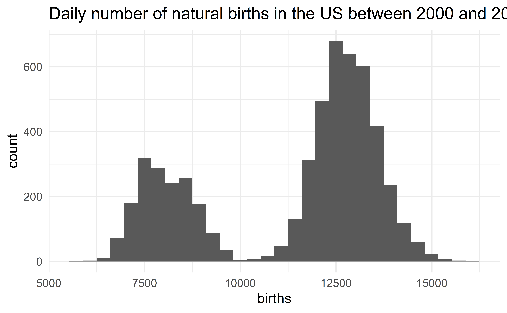
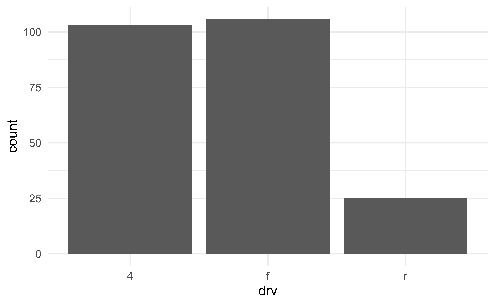
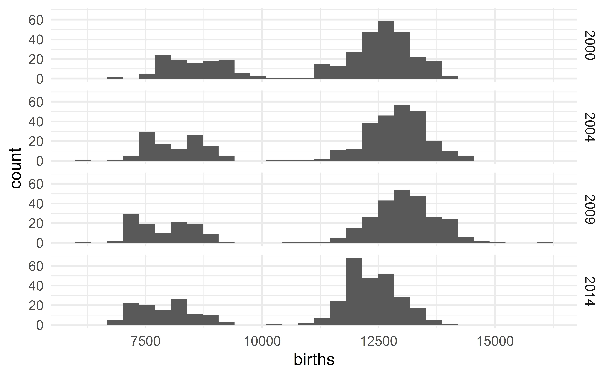
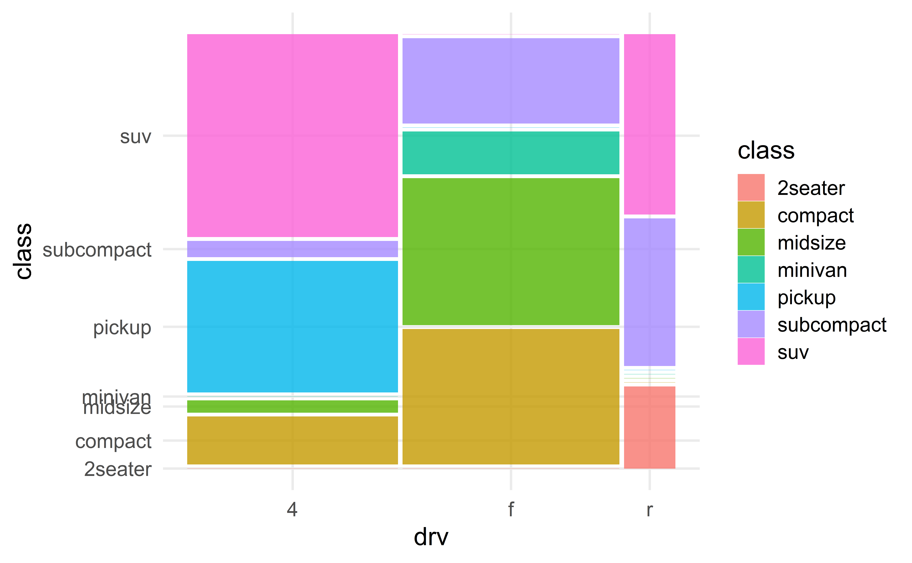
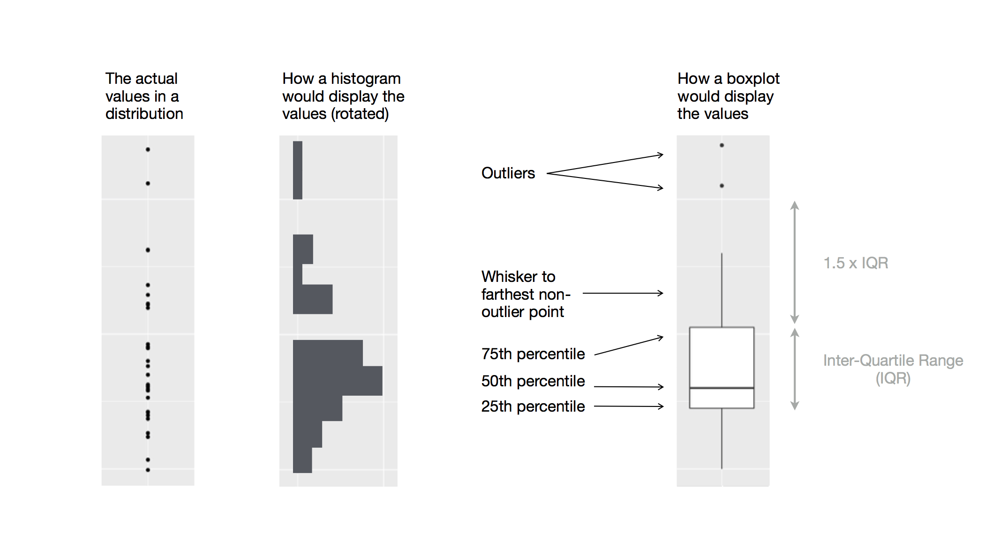
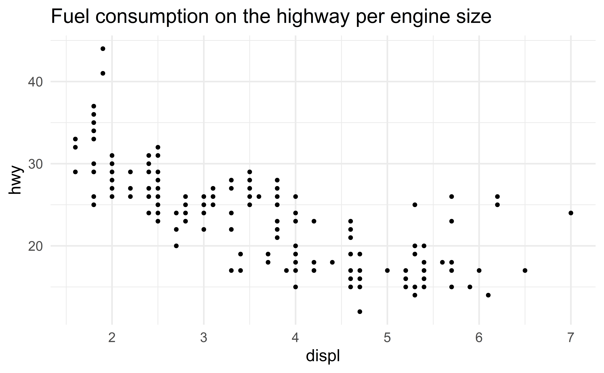
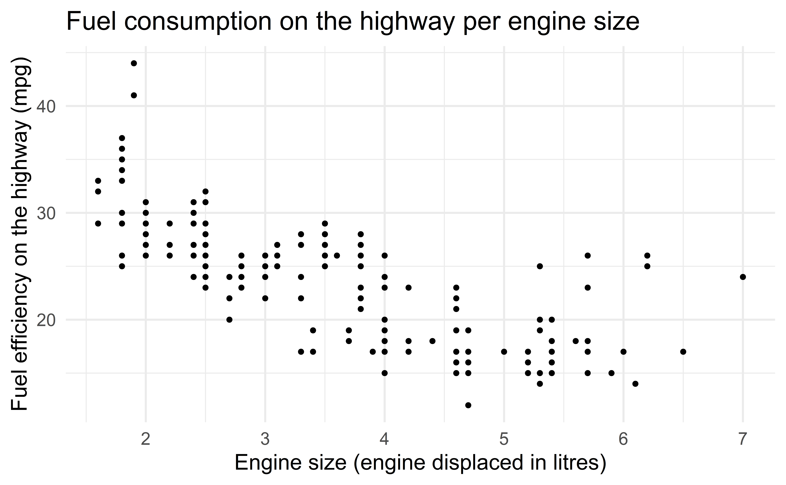

02:00
Data Summary and Visualization
STA 101L - Summer I 2022
Raphael Morsomme
Welcome
Announcements - OH
- OH:
- Raphael: Mon, Wed 10-11am (virtual)
- Roy: Wed, Fri 4:45-5:45pm (hybrid)
- This week (exceptional):
- Roy: Fri 2:30-3:30pm (hybrid)
- Raphael: Sun 9:00-10:00am (virtual)
Announcements - HW
- HW due on Sunday 9:00pm and Wednesday 9:00pm
- HW 1 is due Sunday, May 15 at 9:00pm
Announcements - general
- Lectures will closely follow IMS, but
- some topics will be skipped, e.g. 2.1.5, dot plots, etc.
- some topics will be added, e.g. AIC and BIC
- Drop/Add for Term 1 ends tomorrow (Friday, May 13).
Franklin (albino) and Gillman have read the syllabus. Have you?
Recap of last lecture
- observations (row) and variables (column)
- population parameters and sample statistics
- statistical inference
- sampling
- four types of variables
- experiments, observational studies and causal claims
Breakdown of variables into their respective types.
Source: IMS
Outline
- Visualization for numerical data
- Summary for numerical data
- Visualization for categorical data
- Summary for categorical data
- More visualizations
“The greatest value of a picture is when it forces us to notice what we never expected to see.” — John Tukey
7 Billion: Are You Typical?
Group exercise - data summaries?
- What variables are mentioned in the video?
- What are their types?
- How were they summarized and/or visualized?
Visualization for numerical data
US birth data
There are 5479 observations (rows)
and 6 variables (columns)
# A tibble: 6 x 6
year month date_of_month date day_of_week births
<int> <int> <int> <date> <ord> <int>
1 2000 1 1 2000-01-01 Sat 9083
2 2000 1 2 2000-01-02 Sun 8006
3 2000 1 3 2000-01-03 Mon 11363
4 2000 1 4 2000-01-04 Tues 13032
5 2000 1 5 2000-01-05 Wed 12558
6 2000 1 6 2000-01-06 Thurs 12466Rows: 5,479
Columns: 6
$ year <int> 2000, 2000, 2000, 2000, 2000, 2000, 2000, 2000, 2000, 20~
$ month <int> 1, 1, 1, 1, 1, 1, 1, 1, 1, 1, 1, 1, 1, 1, 1, 1, 1, 1, 1,~
$ date_of_month <int> 1, 2, 3, 4, 5, 6, 7, 8, 9, 10, 11, 12, 13, 14, 15, 16, 1~
$ date <date> 2000-01-01, 2000-01-02, 2000-01-03, 2000-01-04, 2000-01~
$ day_of_week <ord> Sat, Sun, Mon, Tues, Wed, Thurs, Fri, Sat, Sun, Mon, Tue~
$ births <int> 9083, 8006, 11363, 13032, 12558, 12466, 12516, 8934, 794~Histogram
- Higher bars indicate where the data are relatively more common
- More days with around 8,000 births or with around 12,500 births
- Few days with less than 7,000 or more than 14,000 births.
- Also few days with around 10,000 births
We can change the number of bins to have a rougher or more detailed histogram.
Statistics as an art - describing a distribution
Tip
To explore a numerical variable, always start with a histogram
To describe the distribution of a numerical variable, we comment on
- the mode(s): unimodal, bimodal, multimodal
- the shape of each mode: flat, bell-shape, bounded
- the symmetry: symmetric, left skewed, right skewed
- the outliers: presence of extreme values
- any other surprising feature.
Describing a distribution is an art
Note that some distributions will not fit nicely in these categories.
Describing the US birth data
The distribution of the daily number of births in the US is bimodal with each mode being bell-shaped and symmetric. We observe no extreme value.

Group exercise - describing a distribution
Describe the distributions in exercises 5.6, 5.13, 5.24 and 5.26 (only consider the histograms)
04:00
Scatterplots
Histograms: visualize the distribution of a single numerical variable.
Scatterplots: visualize the relation between two numerical variables.
The mpg dataset
# A tibble: 6 x 11
manufacturer model displ year cyl trans drv cty hwy fl class
<chr> <chr> <dbl> <int> <int> <chr> <chr> <int> <int> <chr> <chr>
1 audi a4 1.8 1999 4 auto(l5) f 18 29 p compa~
2 audi a4 1.8 1999 4 manual(m5) f 21 29 p compa~
3 audi a4 2 2008 4 manual(m6) f 20 31 p compa~
4 audi a4 2 2008 4 auto(av) f 21 30 p compa~
5 audi a4 2.8 1999 6 auto(l5) f 16 26 p compa~
6 audi a4 2.8 1999 6 manual(m5) f 18 26 p compa~We will look at the relation between engine size (disp) and fuel efficiency (hwy).
Note
To add an additional variable to your visualization, you can use color or symbols.
Summary for numerical data
Measures of centrality
- The average: \(\bar{x} = \dfrac{x_1 + \dots + x_n}{n}\)
- To compute the average age in the class, we would calculate
\[ \overline{\text{age}} = \dfrac{\text{age}_{Hayden} + \text{age}_{Janice} + \text{age}_{Kenndy} + \text{age}_{Maggie} + \text{age}_{Melissa} + \text{age}_{Yuanzhi}}{6} \]
- The median: the middle value
- 50% of the sample is large than the median, and 50% is smaller.
Percentiles
Percentiles are a generalization of the median.
The value that is larger than p% of the data and smaller than the rest is called the p-th percentile.
The median is the 50th percentile.
We will soon make use of the 25th and 75th percentiles.
Later in the course, the 95th and 97.5th percentiles will also be useful.
Measures of variation
- Variance: average squared distance from the mean
- Standard deviation (sd): square root of the variance (roughly speaking, the average distance to the mean)
- Most (+- 95%) of the data is within 2 sd of the mean.
- Inter-quartile range (IQR): distance between the 25th and the 75th percentiles.
Robustness
Real-world data often contain extreme values
- measurement errors,
- typos,
- extreme observations,
- …
The average, median, variance, sd and iqr are not equally robust to the presence of extreme values.
Let us contaminate the birth data with an extreme value of 1 billion…
…and compare the mean, median, variance, sd and iqr of these two variables.
Min. 1st Qu. Median Mean 3rd Qu. Max.
5728 8740 12343 11350 13082 16081 Min. 1st Qu. Median Mean 3rd Qu. Max.
5.728e+03 8.740e+03 1.234e+04 1.938e+05 1.308e+04 1.000e+09 Robustness of the median and the iqr
While the median and iqr are robust to the presence of extreme values, the mean, variance and sd are not.
05:00
Summary for categorical data
Frequency table (1d)
# A tibble: 6 x 11
manufacturer model displ year cyl trans drv cty hwy fl class
<chr> <chr> <dbl> <int> <int> <chr> <chr> <int> <int> <chr> <chr>
1 audi a4 1.8 1999 4 auto(l5) f 18 29 p compa~
2 audi a4 1.8 1999 4 manual(m5) f 21 29 p compa~
3 audi a4 2 2008 4 manual(m6) f 20 31 p compa~
4 audi a4 2 2008 4 auto(av) f 21 30 p compa~
5 audi a4 2.8 1999 6 auto(l5) f 16 26 p compa~
6 audi a4 2.8 1999 6 manual(m5) f 18 26 p compa~Contigency table (2d)
Proportion table (2d)
Group exercise - contigency and proportion table
- What does the number \(12\) (2nd row, 1st column) represent in the contigency table?
- What does the number \(0.05\) (2nd row, 1st column) represent in the first proportion table?
- What does the number \(0.25\) (2nd row, 1st column) represent in the row proportion table?
03:00
Visualization for categorical data
Barplot
We can add a second categorical variable using colors.
Advanced barplots
Group exercise - pros and cons of barplots
Exercise 4.5
03:00
Advanced visualizations
Faceted histograms
Beyond 2 variables
Faceted figures are a great way to include \(\ge\) 3 variables! See exercise 1.13
Mosaic plot
✅ Combines the strengths of the various barplots.
🛑 Not in the tool box of every data scientist
Boxplots
From raw data to boxplot
Source: R 4 Data Science
The thick line in the middle of the box indicates the median;
the box stretches from the 25th percentile (Q1) to the 75th percentile (Q3); it covers 50% of the data;
the length of the whiskers are at most 1.5 iqr;
any observation more than 1.5 iqr away from the box is labelled as an outlier;
- more compact than histograms
Outliers
Outliers have an extreme value. How to deal with an outlier depends on why the observation stands out. Outliers can be
- removed
- corrected
- ignored
Group exercise - limitation of boxplots
Exercise 5.13
01:00
Editing figures
Figure title
Axis labels
Editing tables
table(d_car$class, d_car$drv) %>%
prop.table(1) %>%
round(2) %>%
kbl(caption = "Distribution of drive type per class of car") %>%
kable_classic(full_width = FALSE, c("striped", "hover"))| 4 | f | r | |
|---|---|---|---|
| 2seater | 0.00 | 0.00 | 1.00 |
| compact | 0.26 | 0.74 | 0.00 |
| midsize | 0.07 | 0.93 | 0.00 |
| minivan | 0.00 | 1.00 | 0.00 |
| pickup | 1.00 | 0.00 | 0.00 |
| subcompact | 0.11 | 0.63 | 0.26 |
| suv | 0.82 | 0.00 | 0.18 |
📋 See this vignette for more details on editing tables
Effective communication
Statistics as an art - figures
- Have a purpose: is the figure necessary?
- Parsimony: keep it simple and avoid distractions
- Tell a story: provide context and interpret the figure
- At least 3 variables as often as possible: color, shape, facets, etc.
- Edit your figure: title, axes, theme, etc.
📋 See R for Data Science - chapters 3 and 7 for more on data visualization in R.
Recap
Recap
- Histogram, scatterplot, boxplot
- Average, median, variance, sd and IQR; robustness
- Frequency, contigency and proportion tables
- Barplot, mosaic plot
- Effective communication: well-edited figures, \(\ge3\) variables (symbols, colors, facets), tell a story
- R for Data Science - chapters 3 and 7
“The simple graph has brought more information to the data analyst’s mind than any other device.” — John Tukey